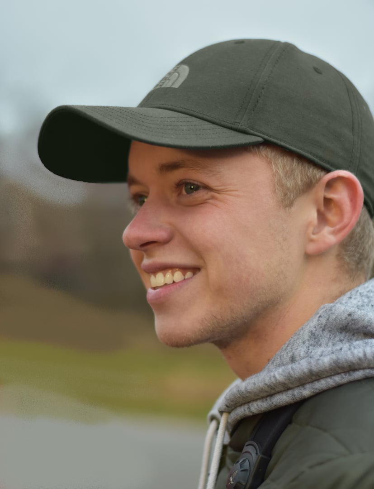

Home/Wouter van der Ham
Over ons
Wouter van der Ham
Oprichter en ecoloog bij Van Der Ham Ecologie. Specialist in insecten, flora en vogels.
Vrijblijvend overleggen
Van 150+ natuurkampen tot ecoloog
Ik ben Wouter, geboren in 1996 en opgegroeid in Voorschoten. Al van jongs af aan ben ik gefascineerd door de natuur. Als klein kind kroop ik al rond in de tuin, op zoek naar pissebedden en kevertjes.
Later ontwikkelde ik een passie voor vogels kijken, wat me bij de JNM (Jongeren in de Natuur) bracht. Daar heb ik veel kampen begeleid en deelgenomen aan zo'n 150 natuurkampen door heel Nederland. Dat leverde me niet alleen enthousiasme voor allerlei biotopen op, maar ook brede soortenkennis: vogels, planten, libellen en dagvlinders.
Opleiding en ervaring
MBO Bos- en Natuurbeheer
Gouda (2011–2016). De basis voor praktisch natuurbeheer.
HBO Bos- en Natuurbeheer
Van Hall Larenstein, Velp (2017–2022). Specialisatie in toegepaste ecologie.
Stages en werkervaring
Al tijdens mijn studie deed ik ervaring op met broedvogelonderzoek en flora-karteringen, en liep ik stages bij Dunea, Flora & Fauna Expert en EIS Kenniscentrum Insecten.
Van Der Ham Ecologie
In 2022 startte ik mijn eigen eenmanszaak, om zelfstandig ecologisch onderzoek en advies te leveren.
Wat maakt mijn werkwijze anders?
Ervaring in het veld en specialistische kennis, vertaald naar advies dat praktisch, eerlijk geprijsd en juridisch solide is.
Persoonlijk contact
U communiceert direct met mij. Geen tussenpersonen, geen wachtlijsten. Snelle reacties en heldere afspraken.
Specialistische kennis
Diepgaande kennis van insecten (vlinders, libellen, sprinkhanen), flora én vogels. Zo zie ik verbanden en risico's die anderen missen.
Juridisch onderbouwd
Al mijn rapportages voldoen aan de Omgevingswet: praktisch advies met een onderbouwing die bij het bevoegd gezag standhoudt.
Breed netwerk
Door mijn JNM-achtergrond en jarenlange ervaring heb ik een uitgebreid netwerk van specialisten en collega-ecologen.
Even kennismaken?
Hebt u vragen over een ecologisch project, of wilt u weten wat ik voor u kan betekenen? Neem gerust contact op voor een vrijblijvend gesprek.